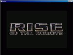
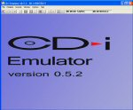
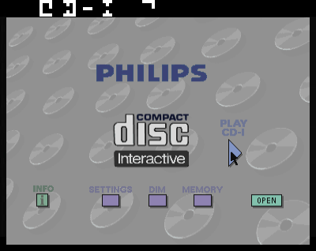
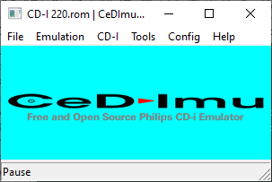

CD-i emulators
On this page, you will find an overview of all CD-i emulators.
CD-Ice
CD-i Emulator
MAME
CeDImu
Other emulators
CD-Ice
 CD-Ice was written by Peter Dabbs, one of the developers of the CD-i game Rise of the Robots. Peter used his sources of the game to reimplement the necessary CD-RTOS operating system calls. A preview version is available that supposedly only plays the Rise of the Robots disc, but it is rumoured that with suitable trickery you can also use it to play some other CD-i titles.
CD-i Emulator
 The aptly named CD-i Emulator program written by CD-i Fan provides fairly complete hardware emulation of a CD-i player. In order to actually run CD-i software, the emulator needs copies of the CD-i player ROMs which can be uploaded through a seperate program from CD-i Fan called CD-i Link. Refer to
CD-i Link
and
CD-i Stub
for more information on uploading your CD-i players ROM. Visit the
CD-i Emulator Home
website for further information.
MAME
 MAME, originally the Multiple Arcade Machine Emulators, is a project to preserve decades of software history by documenting the hardware and how it functions in the form of source code. That the software is usable serves primarily to validate the accuracy of the documentation. MAME is capable of useful CD-i emulation using the cdimono1 driver for Philips Mono-I player ROMs. Visit the
Official Site of the MAME Development Team
for more information.
CeDImu
 CeDImu is an experimental Philips CD-I emulator being written by Stovent. The current sources are available on
GitHub
; the project is still in a very early development stage. CeDImu uses wxWidgets and compiles on multiple platforms. The eventual goal is to to create libCeDImu, a complete library to allow any program to implement CDI applications.
Other emulators
Several other emulators have been announced but no usable versions ever saw the light of day.
Back to previous page
|
Main screen
|
E-mail & Contact
© Copyright 2005 CDinteractive.co.uk and ICDIA